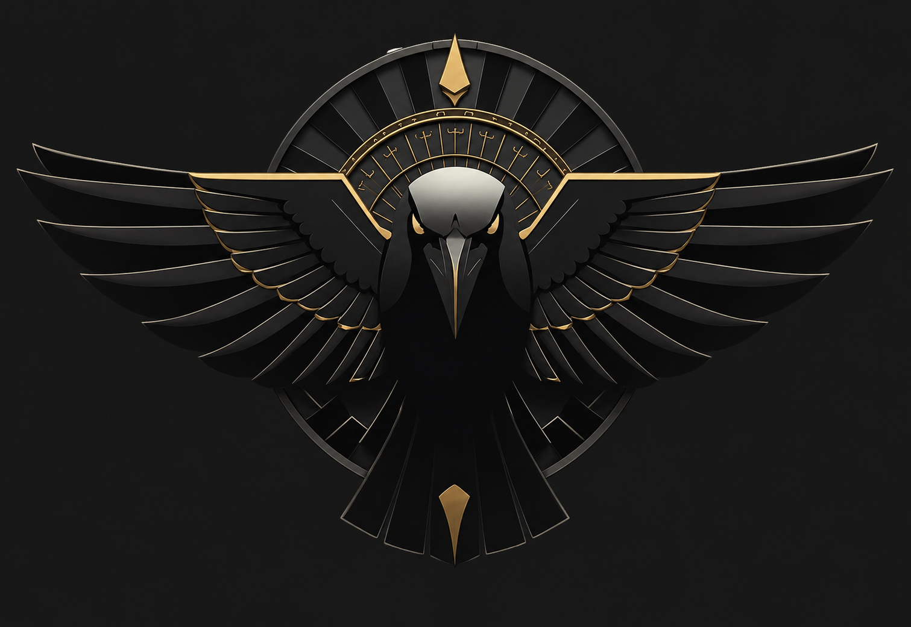

Nigredo · Œuvre au Noir
Nigredo
La putréfaction — dissolution de la forme
Le Nigredo est le commencement obscur. La matière première se décompose, les certitudes s'effondrent, la structure visible disparaît. C'est la phase du chaos nécessaire — non pas l'absence d'ordre, mais le retour à l'état brut avant toute transmutation possible. L'alchimiste qui refuse le Nigredo refuse la vérité de ce qui est.
Sur les marchés
"La tendance se retourne. Les supports cèdent. Le consensus vacille. Ce n'est pas le moment d'agir — c'est le moment de lire."
Dissolution
Retournement
Patience
Observation